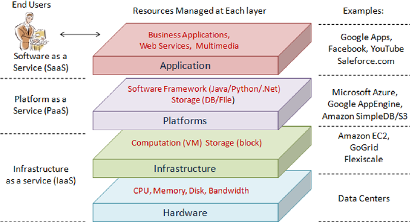

IT Technologies - Clouds, Services, Servers
Cloud computing technology has become a key feature in modern day computing. It
facilitates the delivery of services via the Internet. These services can include servers,
software, infrastructure, storage, networking and databases. These resources are often
leased out to consumers and businesses using a consumption-based pricing model with no
up-front investments.
There are 3 cloud types:
Public
Public cloud vendors provide storage, applications and various services via the Internet and
is available to the general public.
Private
This is infrastructure where access is limited to particular individuals or groups, such as
those working within a department of an organisation.
Hybrid
This is a combination of both public and private clouds, offering the benefits of multiple
models. This allows an organisation to have less-sensitive elements of their business in a
public cloud and keep the rest stored in a private cloud or local server.
For many organisations who haven’t made the switch or are hesitant, the Hybrid-cloud
approach is proving popular.
In a cloud computing environment, there are 3 main types of services:
IaaS (Infrastructure as a service)
This is when a company can provide infrastructure to the consumer from a remote location.
This is done using virtualisation technology. The provider ensures security for your data and
an uninterrupted service for your operations.
PaaS (Platform as a service)
This service provides developers with an online framework where software can be built.
SaaS (Software as a service)
This service provides access to software hosted within the cloud. This service enables real
time collaboration and requires no hardware installation.

(Zhang, 2010)
Companies such as Microsoft, Google and Amazon have invested heavily in cloud
technology and are industry leaders when it comes to cloud computing. Azure, AWS and
Google Cloud Platform are just some examples of the state-of-the-art infrastructure already
available to consumers. As more consumers and organisations move their business to the
cloud, this competitive market will create opportunity for further innovation.
Today, organisations are using cloud technology to completely rethink their business
models. Historically, the cloud has been used for basic computing, storage and networking,
however our current cloud ecosystems are using AI and API technology to create a more
customised approach.
The main enabling technology behind cloud computing is virtualisation. Virtualisation refers
to the technology used to create a virtual version of an operating system, server, storage
device or network, etc. It uses software that simulates hardware functionality to create
multiple virtual servers, otherwise known as virtual machines. By utilising this technology,
companies are able to provide remote infrastructure, platforms and software. Because this
technology is highly accessible and scalable, both individuals and organisations are seeking
its services to conduct their business going forward.
Over the next 3 years, as the world migrates to the cloud, the demand for data storage and
data security will increase. Many companies are being inundated with Big Data and
traditional IT departments are struggling to store, analyse and manage all of this data. These
problems can limit an organisation’s ability to respond to today’s quickly changing business
environments in a timely manner.
The increase in the use of IoT technology, machine learning, AI and natural language
processing in our everyday devices is creating huge amounts of data.
We have existing data centres around the world which help facilitate Big Data being stored
in the cloud. Big Data and how it can be stored in an efficient, secure and sustainable way
will influence the direction of this technology.
In an effort to effectively analyse these massive databases, the use of quantum computing
technology will increase, as this technology is able to complete complicated algorithm
calculations at powerful speeds. Major corporations such as IBM, Microsoft and Google are
already beginning to incorporate this technology to gain a competitive advantage in the
market (Saleem, 2020).
While the rise in demand for cloud-based services grow, so does the demand for technology
that brings data storage and processing closer to the end-user, such as edge computing or
serverless computing.
Advancements in areas of AI, serverless computing and quantum computing are at the core
of predicted trends in cloud computing.
As more companies seek to create faster, cheaper and more reliable cloud services, more
businesses will change the way they conduct their business to reap the benefits of this
technology. As a result of the Covid-19 pandemic, the global public cloud infrastructure
market is set to hit $120 billion later this year, as more organisations move their business to
the cloud (Goodison, 2020).
Given this, it is likely that key metrics will improve as organisations spend less time, energy
and money on foundational infrastructure.
Having said this, however, an increase in security measures will be necessary as more
people work from home and access services in the cloud using their own devices on
unsecured servers.
Cloud technology has meant that the consumer can live in a more seamlessly integrated
world amongst their devices. Competitive pricing models and customised storage plans are
just some of the ways the consumer benefits from this technology. If it weren’t for cloud
computing, the impacts of the recent Covid-19 pandemic would have been far worse. The
events of 2020 revealed the weaknesses of global enterprises, leaving companies cut off and
desperately trying to find remote solutions. Fortunately, when the world went into
lockdown, a lot of industries were able to have their employees continue to work from
home (an impossible task without the use of this technology).
However, advancements in cloud computing have led to large quantities of data needing to
be processed and analysed at speeds which humans are incapable of.
As our world becomes more cloud-based, AI will begin to replace humans in the workforce.
While the use of AI increases in areas such as facial recognition, machine learning and
natural language processing, the demand for human-based jobs will decrease in areas such
as data processing, surveying and analytics. IT jobs in areas such as data administration and
helpdesk support will decline, as IaaS providers will have these features built into their
services.
In some respects, however, new job opportunities will arise for humans to create solutions
to the issues caused by AI such as Big Data storage and security. The demand for more data
centres and the expansion of existing ones will also continue to provide jobs within the
industry. Software Developers and Business Analysts are predicted to see continued growth,
as these jobs will be crucial to the success of organisations managing their business in the
cloud. In addition to this, we will continue to see growth in areas of cyber security, as more
business takes place in an online environment where privacy will become harder to
maintain (Collabera, n.d.).
Cloud computing has had an enormous effect on the technology I use in my everyday life. I
make use of this technology when I am studying online and using SaaS models such as Office
and Teams to share and collaborate in real time with my fellow students. I also use the
cloud to store music and photos that can be access later from a range of my devices.
I look forward to being able to conduct more of my work and studies remotely. I believe the
developments surrounding cloud computing will provide myself and those around me with a
much more convenient and customised world.
I have friends and family who are now working remotely on a permanent basis with the use
of cloud technology. Whilst there may be some who struggle to adapt to life in the cloud,
such as the elderly and computer illiterate, the majority of those I know will welcome it, as it
means no longer investing in physical storage solutions or only being able to access data
from one device at a time.
References
Collabera, n.d., How Will Cloud Computing Affect IT Jobs?, Collabera, viewed 6 April 2021,
collabera.com/find-a-job/career-resources/how-will-cloud-computing-affectit-jobs
Goodison, D., 2020, 10 Future Cloud Computing Trends To Watch In 2021, CRN, viewed 6
April 2021, crn.com/news/cloud/10-future-cloud-computing-trends-towatch-in-2021
Saleem, S., 2020, Exploring the Future of Cloud Computing in 2020 and Beyond, G2, viewed 6
April 2021, learn.g2.com/future-of-cloud-computing
Zhang, Q. &. C. L. &. B. R., 2010, Cloud Computing: State-of-the-art and Research Challenges,
Researchgate, viewed 6 April 2021,
researchgate.net/publication/225252747_cloud_computing_state-of-theart_and_research_challenges
Web page was designed with Mobirise